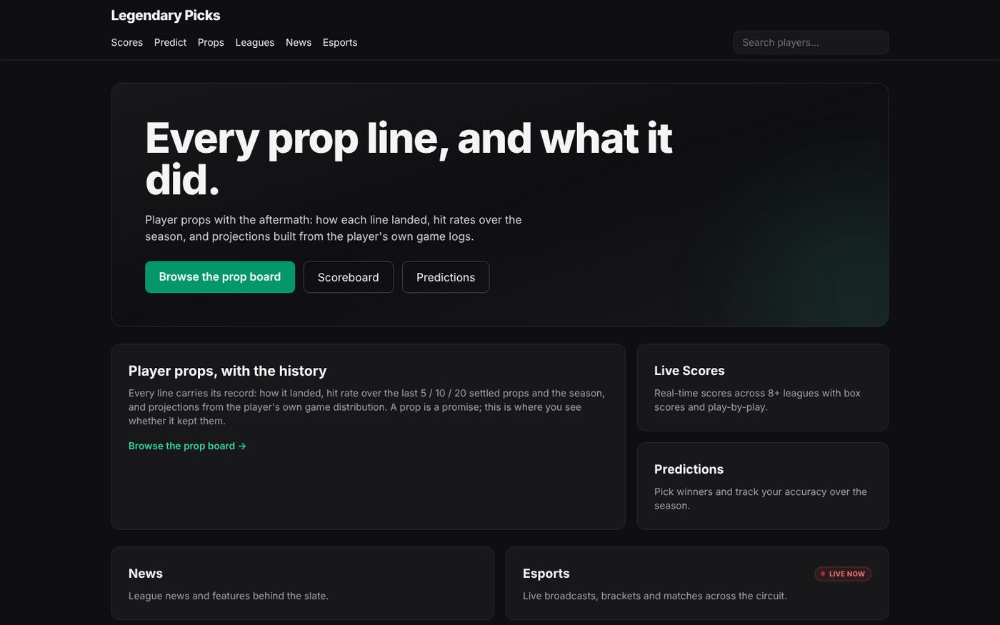
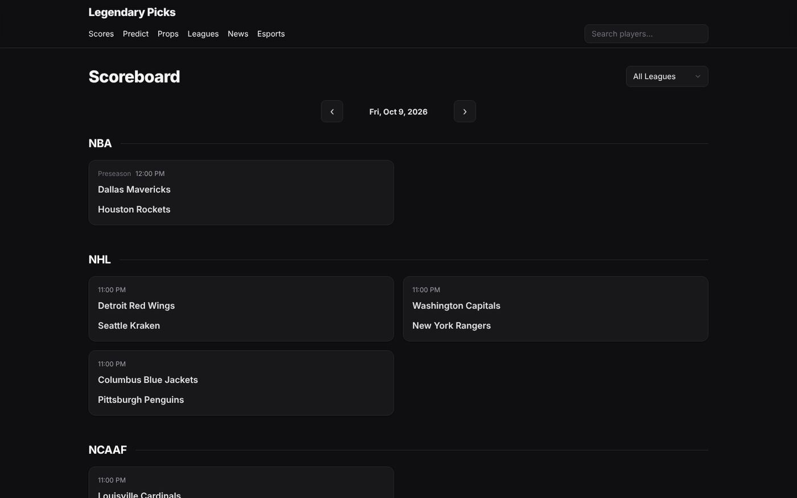
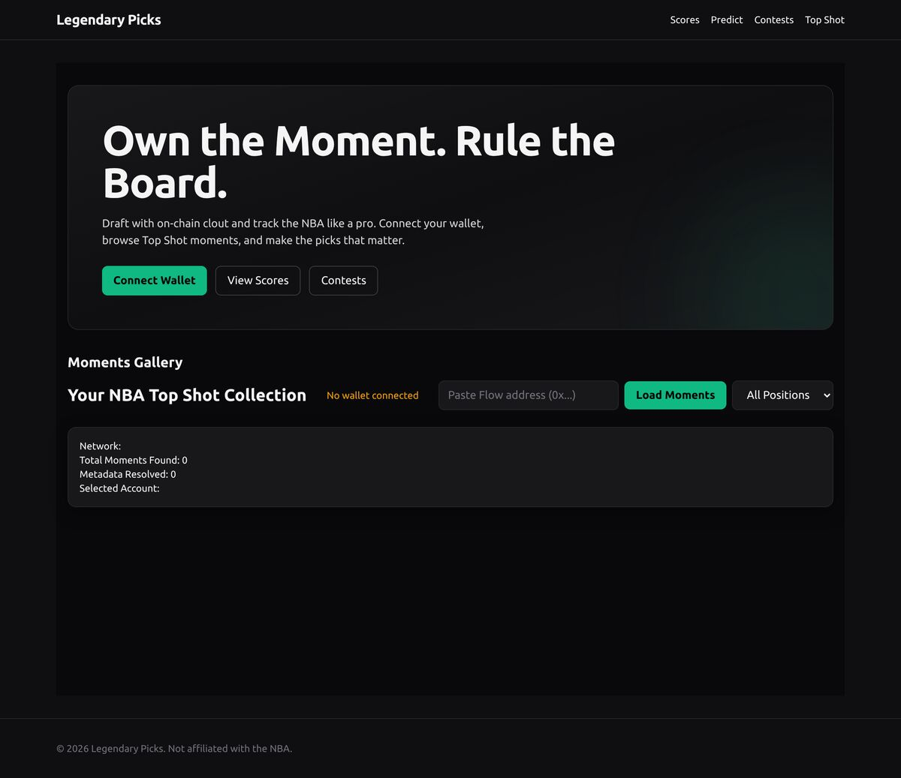

Legendary
Picks
Every prop line, and what it did.

Legendary Picks is a sports data and prediction product. Live scores, box scores and play-by-play across 8+ leagues, player props with their history, predictions you can track over a season, league news and live esports, all on one fast, clean scoreboard.
Its signature feature is props with the aftermath. Every line carries its record: how it landed, its hit rate over the last 5, 10 and 20 settled props and the season, and projections built from the player’s own game logs. A prop is a promise; this is where you see whether it was kept.

The browser never scrapes anything. Ingest jobs are the only things that write data. They pull from each league’s own publisher, resolve players, teams and games by stable source IDs rather than display names, and publish snapshots to one canonical SQLite store. A FastAPI service reads that store and the Next.js app reads the API. If data is missing or unverified, the site says so instead of making something up.
Legendary Picks began as a fantasy layer on NBA Top Shot: connect a Flow wallet, browse your moments, draft with them. When Top Shot moved into that space itself, I pivoted to an independent, data-first product that doesn’t depend on anyone else’s platform. Along the way it was also a picks show, with prediction videos for UFC cards.

More Projects